In an effort to provide more focus to our flying sessions, the Marin Aero Club has decided to reinstitue periodic contests. We hope they will be more fun than stressful, and all skill levels are invited to participate. A few awards might be passed about, based on the whims of the CD. |
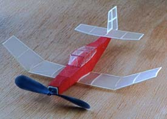
my 8" mini Akro |
|---|---|
|
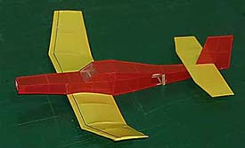
Roy Kissin's Akro, covered with RA Microlite. |
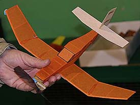
John Carlson prefers more traditional tissue. |
|
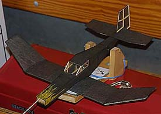
Tom Whitworth's "Hot Rod Akro" |
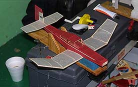
Marius's entry awaits winding. |
|
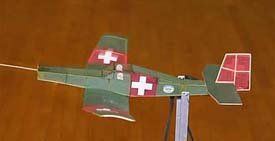
Fanciful Swiss Air Force by George Benson |
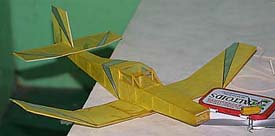
Jerry Long's Akro is curiously strong |
|
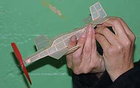
Phobi Long adjusts an 8" Akro built the night before and finished at the contest. |
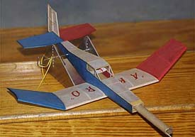
Kermit Walker's Patriotic Akro |
|
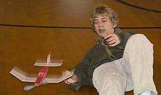
Marius Cannard relaxes while using almost every inch under the rafters Tom's "Zero Altitude" launch. | 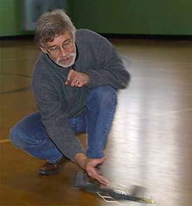 |
|
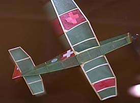
George Benson's "Swiss Air Force" Akro |
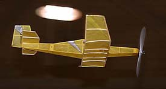
Circling near the lights in the Mass Launch |
|
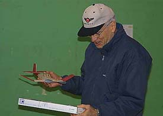
Bill Dempsey wins with a 3 flight, 242 sec. total |
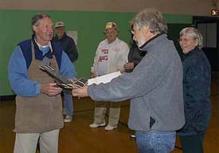
Tom Whitworth takes the Mass Launch award |
Copyright 2001, Thayer Syme. All rights reserved